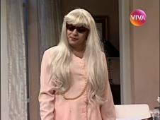
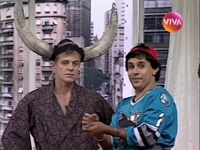
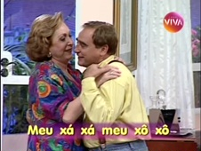
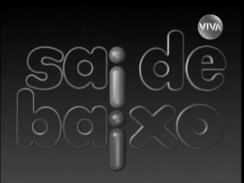
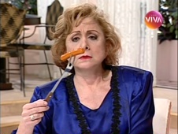
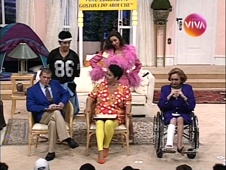
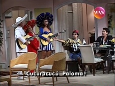

Sai de Baixo
| EPISÓDIO | EXIBIÇÃO | REPRISE | |||
|---|---|---|---|---|---|
| 1ª TEMPORADA - ANO 1 - 1996 | |||||
| 001 | 1x01 |  | "A Festa de Babete" de Maria Carmem Barbosa e Miguel Falabella autores Flávio de Souza, Euclydes Marinho, Maria Carmem Barbosa, Miguel Falabella e Nani direção Daniel Filho elenco convidado Paula Burlamaqui |
31/03/1996 | 18/05/2010 |
| 002 | 1x02 |  | "Tio Lico Subiu no Telhado" de Flávio de Souza autores Flávio de Souza, Euclydes Marinho, Maria Carmem Barbosa, Miguel Falabella e Nani direção Dennis Carvalho elenco convidado Turíbio Ruiz |
07/04/1996 | 19/05/2010 |
| 003 | 1x03 | "Nasce Uma Estrela" de Elisa Palatnik e Nani autores Flávio de Souza, Euclydes Marinho, Maria Carmem Barbosa, Miguel Falabella e Nani direção Daniel Filho |
14/04/1996 | 20/05/2010 | |
| 004 | 1x04 |  | "Corre Que o Tarado Vem Aí" de Maria Carmem Barbosa e Miguel Falabella autores Flávio de Souza, Euclydes Marinho, Maria Carmem Barbosa, Miguel Falabella e Nani direção Daniel Filho elenco convidado Dino Moreno, Julio Chiba, Marcelo Franzolin e Paulo Prado |
21/04/1996 | 21/05/2010 |
| 005 | 1x05 |  | "Trocando Seis Por Meia Dúzia" de Noemi Marinho direção Daniel Filho |
28/04/1996 | PULADO |
| 006 | 1x06 |  | "O Sexo Nosso de Cada Dia" de Miguel Falabella e Maria Carmem Barbosa direção Daniel Filho elenco convidado Rodrigo Santoro |
05/05/1996 | 22/05/2010 |
| 007 | 1x07 | "Separação de Bens" de Flávio de Souza direção Daniel Filho |
12/05/1996 | PULADO | |
| 008 | 1x08 | "Uma Morta Muito Viva" do Grupo Obrigado Esparro (Cláudia Souto, César Cardoso, Emanuel Jacobina, Juca Filho e Mauro Wilson) direção Denis Carvalho |
19/05/1996 | PULADO | |
| 009 | 1x09 |  | "Brasileiros e Brasileiras" de Elisa Palatnik, Nani e Juca Filho direção Denis Carvalho |
26/05/1996 | 24/05/2010 |
| 010 | 1x10 |  | "Ribatur Turismo" do Grupo Obrigado Esparro (Cláudia Souto, César Cardoso, Emanuel Jacobina, Juca Filho e Mauro Wilson) direção Denis Carvalho elenco convidado Tato Gabus Mendes |
02/06/1996 | 29/05/2010 |